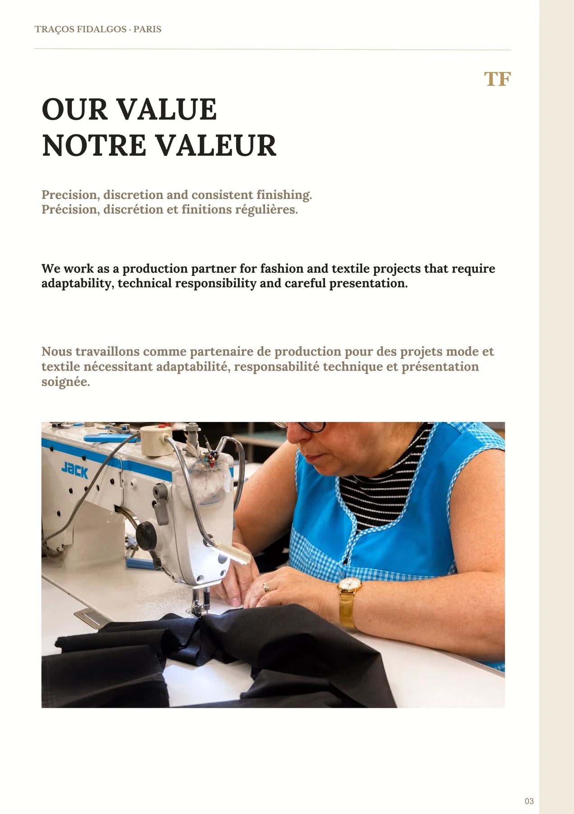
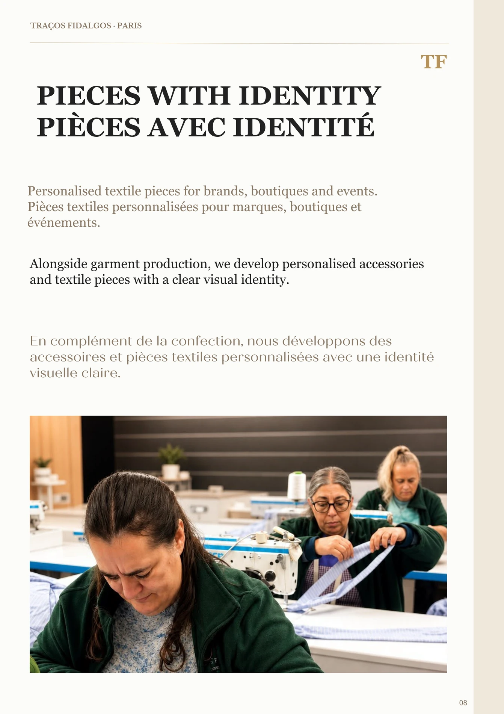
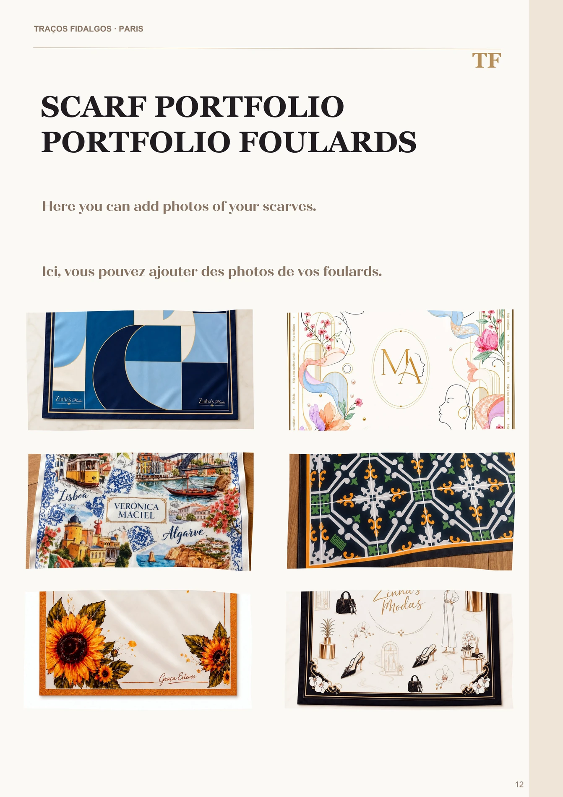

Prototyping and development
Support in turning an idea, drawing, reference or technical file into a physical piece ready to test and refine.
Paris presentation
A clear introduction to Traços Fidalgos for brands, designers, boutiques and companies looking for a Portuguese premium garment production partner with technical rigour, flexibility and refined finishing.
Traços Fidalgos
Traços Fidalgos is a Portuguese atelier based in Perafita, Matosinhos, focused on developing and manufacturing garments and textile projects for brands, companies and professional clients.
We support projects from briefing and prototyping to production, finishing, quality control and final delivery. The goal is simple: turning ideas into well-made products with method, attention to detail and a presentation suitable for the European market.
Services
Support in turning an idea, drawing, reference or technical file into a physical piece ready to test and refine.
Flexible production for brands, boutiques, capsule collections and projects that do not require very large industrial volumes.
Uniforms, personalised pieces and B2B projects with a refined image, consistency and professional finishing.
Scarves, accessories, made-to-measure pieces, delicate materials and proposals with their own visual identity.
Value
For a final client, the most important thing is not to see divided booklet pages, but to quickly understand what the company solves: production in Portugal, proximity, flexibility, garment quality and direct follow-up.



Materials
The Paris booklet presents several work areas: lace and fluid fabrics, pieces with identity, personalised scarves, custom textile pieces and proposals such as 320 g/m² diagonal fleece. On the website, these themes are explained as concrete services and capabilities, not just presentation pages.
Process
We receive references, drawings, sample pieces or technical files.
We develop a sample and refine proportions, materials and finishing.
We organise manufacturing, control and consistency across each piece.
We prepare the final product with a presentation suitable for the client and market.
Contact
Send references, approximate quantities, materials and timeline. Our team reviews the project and suggests the best production path.
Email
geralt.fidalgos@gmail.com
WhatsApp
+351 96 31 94 111
Atelier
Rua 9 de Julho 1277, 4455-508 Perafita, Portugal